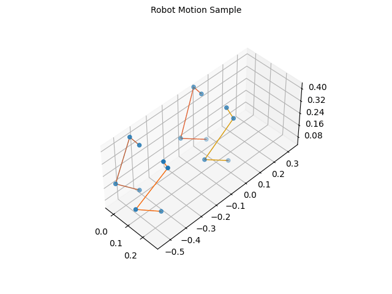
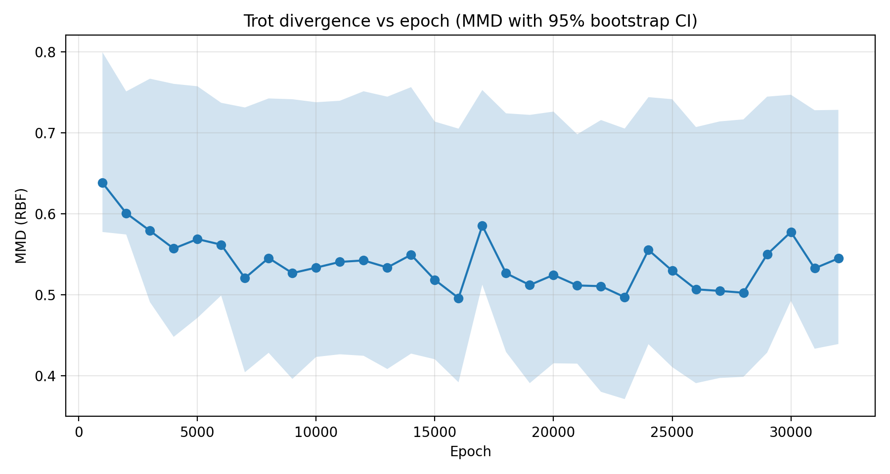

Trained a Motion Diffusion model for a quadruped robot dog. Conditioned on a gait label (trot, bound, pace, etc.), the model denoises noise into smooth joint trajectories that respect the robot's kinematic limits. The generated gaits were then evaluated in simulation for stability, executability and robustness against added noise.
Highlights
- Diffusion model conditioned on discrete gait labels generates joint‑space trajectories end‑to‑end.
- Quantitative analysis of stability and executability when sampled trajectories are tracked in simulation.
- Noise‑robustness study: how the diffusion process handles perturbed initialisations and label conditioning.
- Lightweight enough to be combined with a downstream tracking controller for closed‑loop deployment.
Dataset — DogML
Trained on DogML, a Dog and Quadruped‑Robot Motion–Language dataset comprising 8,048 motion clips paired across real dogs and a quadruped robot, annotated with 8 action classes (walk, jump, trot, …) and 12,072 textual descriptions. The dataset is split into 3,219 training and 805 validation clips, with motion stored as joint‑angle .npy sequences alongside text annotations — a clean source of conditioned motion for diffusion training.
Skills & Technologies
- PyTorch
- Motion Diffusion Models
- Conditional Generation (gait label / text)
- Quadruped Locomotion
- Generative Modelling
- Simulation Evaluation
Gallery


